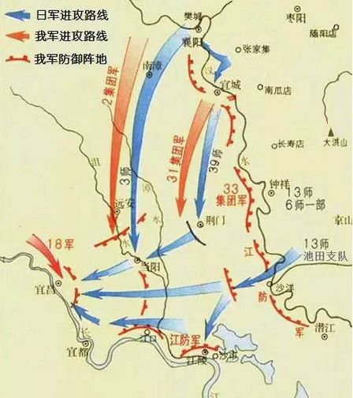

枣宜会战 |
||||
攻占宜昌是日军1940年发动“宜昌作战（即枣宜会战）”的战役目标。 日军1940年5月1日发动枣宜会战。经过一个月鏖战，基本上在执行他们的第一阶段作战计划，即打击枣阳附近的第五战区主力。 “枣宜会战”打响时，张自忠的集团军总部已移至距敌较近的荆门快活铺。在敌人攻占枣阳以后的最关键时刻，张自忠留下阵前遗书：“我们的国家及我五千年历史之民族，决不致亡于区区三岛倭奴之手。为国家民族死之决心，海不枯，石不烂，决不半点改变”，渡河督战，向北进击。张自忠率七十四师骑九师及总部特务营与敌激战几天，5月14日回师方家集，截击南窜之敌。至15日，又驰援宜城南瓜店。伤亡甚重。16日晨，日军复以大部包围，张自忠登山督战，指挥余部与敌拼杀，多次击退日军进攻，但张部500余官兵阵亡。在长山山坡下，张自忠身中数弹，壮烈殉国。 |
||||
|  | ||||
| 返回 | ||||